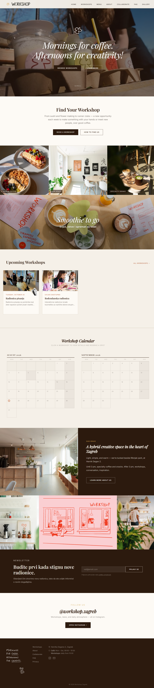

A cozy neighborhood workshop and coffee spot in Zagreb — a warm, editorial brand site built around the daily rhythm from mornings to afternoons.
Visit site ↗Summary
Workshop Zagreb is the site for a café that runs rotating creative afternoon workshops. The public pages lean into an editorial rhythm — soft typography, warm imagery, a pace that mirrors the space itself easing from slow mornings into working afternoons.
Behind it sits an owner-controlled admin panel so Marta and Luka can add, edit, and reschedule workshops themselves, with no developer needed after launch.
Tech Stack
Details
Learning Experience
Splitting a workshop from its occurrences was the modeling decision that mattered most — it kept a recurring class from turning into a copy-pasted row every time it repeated, and let the schedule change without touching the workshop's description or images.
Wiring CI/CD early, rather than as an afterthought, meant the owners could get a content fix live the same day it was requested instead of waiting on a manual deploy.